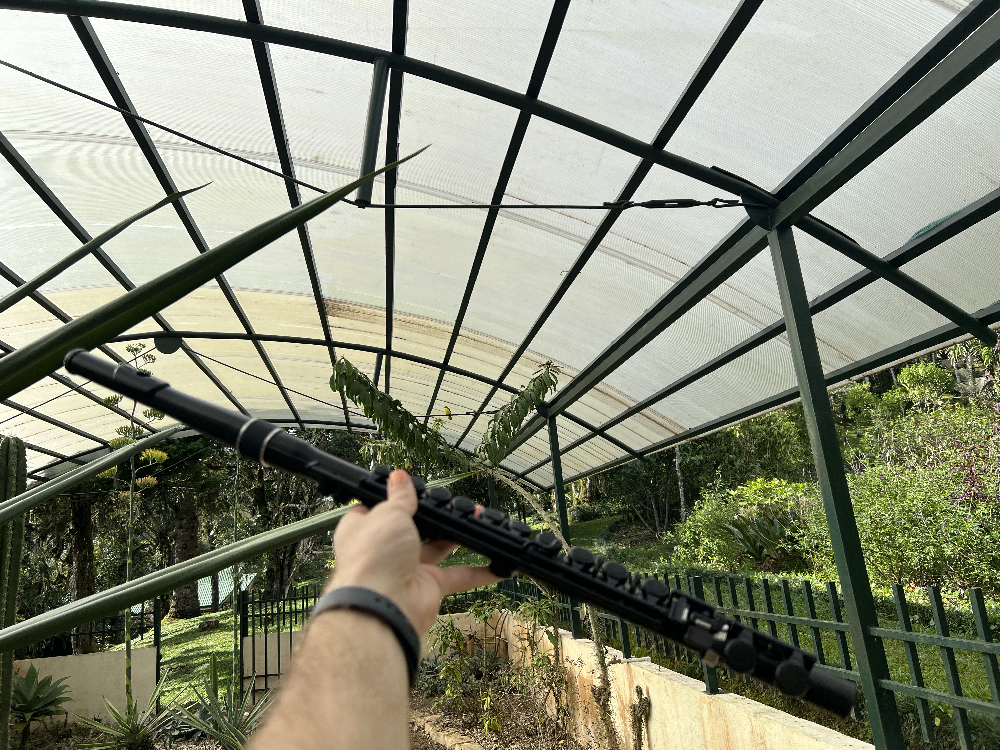

As I negotiate my release from the top of an observation tower with a white-faced capuchin, I realize that I’m not having the best day. I miss my family, I miss my home, and an angry monkey is blocking off my only exit from this observation tower. The capuchin bounces around and continues to chirp. In an effort to intimidate, he jumps side-to-side. Fortunately for both of us, his restlessness creates an opening for me to run down the stairs of the tower. Upon reaching the bottom, I realize that I need to recover and find my footing.
When I feel sad at home, I run off to play piano, and sing my heart out. Here, in Costa Rica, after a difficult start to my day, I find my flute, relying on music to help my reset. Seeking privacy from researchers and other students, I bring my flute to a nearby garden and begin to play. About twenty minutes into my practice, I notice something that brings me joy: a couple of songbirds have come to listen, perching on a nearby wire.
Reflecting on the cuteness of the pair of songbirds listening to my music, my mind goes to personifying them. “They are just like me! They wanted to take a break and sit with the plants and listen to music,” I think. As I continue to play, and the birds continue to listen, it dawns on me that this may be routine for them. This makes me think of the world in an entirely different way. After all, this is their home, not mine. Really, they are less like me; rather, I am more like one of them. I feel like I am one of the birds, and that they are coming to listen to me, as one of their brothers.
Oftentimes, environmentalists anthropomorphize plants and animals, with the goal of making them more approachable and lovable (i.e. Mother Earth). In my moment with the birds, it occurred to me that some of the most beautiful connections to the Earth come not from anthropomorphizing the world, but from de-anthropomorphizing ourselves. Seeing ourselves as an important piece of our environment, rather than seeing our environment as important to us, is a bold mindset shift that flips conventional modern thought.
My songbird epiphany was my first step to realizing many environmentalists tend to frame environmental issues irresponsibly. Stories are rarely a beautiful blend of inspiration and information. Stories in the media surrounding climate change often portray a ‘doom and gloom’ lens on climate change. These depressing narratives in the news are real climate concerns that rely too heavily on sensationalism to illustrate their points. For example, David Wallace Wells wrote an article for the New York Magazine in 2017 entitled “The Uninhabitable Earth,” which describes a future of climate apocalypse. This article became the most-read article in the history of the magazine, likely because of its emotional impact on readers (Wallace-Wells). That being said, research suggests that while emotion-driven ‘doom and gloom’ narratives produce attention and political awareness, they fail to mobilize effective climate responses (Hinkel et al.).
Meanwhile, on the academic side, the words, “that research article was very inspiring!” have perhaps never been uttered outside of a sarcastic setting. Research articles are stubbornly and unequivocally dull unless the reader goes into the article with a vested interest in the topic. But, bogged down in the dry language of an academic paper is valuable research waiting to be transformed through stories that are palatable and digestible by wider audiences.
Societally, we could continue to produce sensational media that dramatizes elements of climate change, alongside research articles that reach niche, academic audiences. However, these forms of communication have failed to produce efficacious climate messages. Instead, we should invest more time and thoughtfulness into crafting compelling climate stories.
It is no secret that climate change is making devastating consequences known. As wildfires tear through forests, hurricanes uproot neighborhoods, and oceans consume the icecaps, a majority of Americans still believe that climate change is not a serious threat to their way of life (Saad). This is proof that hard, objective evidence is oftentimes not enough to get people to care about an issue (Jones & Crow). However, placing objective evidence in the context of an engaging, personal story, shifts the focus from facts to values. For the remainder of this essay, I will explain why I think five words, combining to make the acronym TREES, are able to describe a compelling climate story: (1) Tailored; (2) Remarkable; (3) Experiential; (4) Empathetic; and (5) Spirited. With this framework, I hope to provide tips to readers for communicating effective environmental stories, promoting personal pro-environmental behavior in the process.
(1) Tailored
Firstly, good climate stories are tailored to the audiences receiving them. Properly tailoring a climate story to the audience means understanding the physical landscape of the audience and the form of media that the story will be broadcast over. Different forms of media are conducive to different forms of storytelling. For example, presenting a story in a TED talk may take a different form than a story in an essay format. In a social media setting, stories may be more effective when they emphasize visuals.
Understanding the familiar landscape of the audience is also crucial to framing your environmental story. According to psychologist Robert Gifford, people are more likely to resonate with environmental messaging when they are a part of that environment (Gifford). Gifford specifically discusses the idea of place attachment and place identity, which is the idea that people bond to a place that is important to them. For people with a place identity rooted in Minnesota, being able to tell a story that includes forests and lakes may make the audience feel more bonded to the story. On the other hand, a story about environmental degradation in the desert may be unlikely to get Minnesotans passionate about saving the desert.
The benefits of integrating place into stories go beyond mere engagement with the story itself. Research from psychologists Dr. Lynne Manzo and Dr. Douglas Perkins suggests people are more likely to be sprung to action in environments that are familiar to them. On an individual level, many people hold an identity to land somewhere, and some attachment to that place. To foster development of community in the environment, some level of shared responsibility over a place is important. The literature suggests that emotional ties with the inhabitants of a place can help fuel collective action in that place. Stories that bring local people together are likely to create a local, actionable impact.
(2) Remarkable
Good climate stories include a remarkable moment. Compelling, memorable stories tend to include decisive action. These pivotal decisions can make the audience ponder what they would have done in the storyteller’s shoes. A study done online in the United States found that positive feedback and messages of self-efficacy was an important role in fostering climate action in individuals (Latkin, et al). Similarly, researchers found that community involvement makes it easier for people to feel efficacious. This research lays out the importance of having memorable, self-made moments in a climate story, where the narrator has a positive effect on their environment.
Remarkable moments also give the audience inspiring examples of how to have a positive effect on one’s environment. Because climate change is a collective problem, solutions are oftentimes thought of in a collective manner. A call to action usually includes “we” language. “We need to demand more carbon pollution regulation.” Or, “we need to impose a tax on gas.” Perhaps, “we need better public transportation.” While all of these solutions would indeed help, none of them are realistically actionable for an individual with a job that isn’t a position of immense executive authority. Individual, or local solutions are much more likely to create action. For example, a story about becoming a vegetarian, or starting a community garden, may be more convincing and actionable to an individual that does not have the privilege or time of devoting their lives to climate advocacy.
(3) Experiential
Good climate stories are experiential. Not in the sense that the audience should experience the story themselves, but that the storyteller should craft their narrative around their own personal experiences. Nature documentarian Gianna Savoie says, “Effective science communication is not simply a one-way transmission of data, but rather a process that requires interpretation by the layperson in which their own history, personal beliefs and value sets—the architecture of culture—are embedded.” Many times media and research presents information as though it is floating down a river for the downstream audience to intercept and accept. Rather, Savoie argues, scientific information should be relational, allowing the audience to see themselves as a facet of the story. If audiences feel less like an audience, and more like a part of the story, they may be able to recognize their place in a broader environment with greater clarity, developing a sense of environmental efficacy along the way.
Experiential environmental storytelling is nothing new to many Indigenous communities. Indigenous knowledge centers around personal connections with the environment, and the transfer of this knowledge generally includes experiences, collective action, and spiritual insights (McMeeking). The experiential, relational nature of indigenous storytelling emphasizes personal connections in a way that many modern scientific and media-produced environmental stories fall short. These connection-based ways of thinking require the audience to reflect on their own personal connections to their environments, shifting the climate focus to an individual level. Deepening one’s connection to their immediate environment through personal experiences brings improved environmental efficacy, and climate action (Manzo & Perkins).
That being said, when taking inspiration from components of indigenous storytelling, it is critical to understand how to do so ethically. The process of using indigenous ideas in stories must uplift and empower these communities, which oppressors around the world have marginalized for centuries. In practice, this means providing a space for indigenous storytellers to share their unfiltered experiences, told under their own authority (Smith & Wolfgramm-Foliaki). Oftentimes, scientists and media will cover indigenous storytelling on their own terms, perpetuating a cycle of colonization where even stories of indigenous experiences will be taken and used without consent. When finding inspiration from components of indigenous storytelling, it is important to recognize ethical concerns and to provide space for indigenous people to tell their stories freely.
(4) Empathetic
Good climate stories evoke empathy from the audience. Dr. Michael Jones and Dr. Deserai Anderson Crow believe there is a clear structure to writing a persuasive scientific story. The first step is to determine an audience and an appropriate belief system. Secondly, storytellers must identify valuable characters to convey the messages to this audience. After that, they must explain the problem and solutions, keeping the belief system from part one in mind, before proposing the moral of the story (Jones and Crow). The emphasis on connecting characters to a specific audience is a crucial step for developing an empathetic story.
Based on case studies done by the National Oceanic and Atmospheric Administration, personal climate stories were found to resonate with political moderates and conservatives in a way that other communication channels may not (Gustafson, et al). In this research, we read about a radio story where Richard Mode, a fisherman from North Carolina, notices changes to the marine life of the ecosystem and says, “there is a sense of loss that I cannot fully describe to you verbally.” The 90-second story had a noticeable effect on conservative Americans, who tend not to resonate with climate messages, but who have a sentiment of longing for the past. Although it may not have been intentional, Richard’s ability to connect through shared values makes him a particularly empathetic character to his audience.
Although personal narratives are incredibly valuable, we should also remain cautious of orienting climate stories around humans. We live in an era of immense human impact on the environment; enough of an impact that professors and students alike have begun using the term ‘Anthropocene’ to describe human’s footprint on the world. In 2024, although the International Union of Geological Sciences rejected a proposal to classify the current geologic time period as the ‘Anthropocene,’ they wrote in a statement that the term “will remain an invaluable descriptor in human-environment interactions” (“International Union of Geological Sciences”). Alongside this anthropocentric physical shift, storytellers often humanize animals and nature through characters in stories. Although this may help audiences build empathy with nature, this practice only serves to center an already anthropocentric world around humans further (Aswad). If storytellers seek to connect the audience to the environment, I suggest de-anthropormophizing oneself in the story. By making humans a component of nature, we force the audience to recognize that humans are part of the natural world, not that nature is part of a human world.
(5) Spirited
A good climate story requires passion and depth from the storyteller. In order to tell an engaging story, the storyteller must have a passion for what they are sharing. Audiences are able to sniff out authentic energy fairly well. According to research from marketing specialists Dr. Michael Beverland and Dr. Francis Farrelly, three main components contribute to a feeling of authenticity: Control over one’s environment, the feeling of connection, and the feeling of virtue (Beverland and Farrelly). In practice, these feelings look like being practical, being participatory, and being moral, respectively.
Many college students put stickers on their laptops and water bottles as a reminder of memories they may hold. Whether it be from summer camp, an exciting vacation, or a cool program they were a part of, people like to show what they are connected to as a way of authenticating themselves. In a commercial setting, consumers authenticate brands through identity lenses, and will choose to consume whatever will make them feel authentic (in-control, connected, or virtuous). I believe these three descriptors to self-authentication apply to climate narratives, too. In the context of climate narratives, storytellers should value messages that will allow their audiences to connect with a shared environment, a shared sense of connection, and shared ideas of virtue. Appealing to the audience’s deeper values through honest, passionate storytelling will help audiences identify themselves in a story, helping them develop an authentic connection to the narrative.
Compelling environmental narratives are TREES: Tailored, Remarkable, Experiential, Empathetic, and Spirited. Much like rubrics to a course, following the clear TREES method for producing environmental stories should help people overcome some common challenges of environmental communication.
Critics may argue that the onus should not fall on the individual to concern themselves with environmental efficacy, and that instead, carbon-emitting corporations should accept the responsibility of climate action. I disagree. Under a free-market, carbon-emitting corporations are self-interested, and will not act with the interests of greater society unless it is either economically beneficial or the government imposes regulations to do so. In a democracy, governments will only bring attention to this issue if the voters demand action. Therefore, climate action must start at the individual level, and I believe efficacy begins with effective stories.
Many inhabitants of the United States still fail to recognize climate change for the problem that it is, and the first step to solving a problem is to acknowledge it. We can either continue to rely on research articles and songbirds to teach us societal lessons, or we can become more thoughtful environmental storytellers. I’d prefer to try my hand with the TREES.
Works Cited
Beverland, Michael B., and Francis J. Farrelly. “The Quest for Authenticity in Consumption: Consumers’ Purposive Choice of Authentic Cues to Shape Experienced Outcomes.” Journal of Consumer Research, vol. 36, no. 5, Feb. 2010, pp. 838–856, https://doi.org/10.1086/615047.
D. Jones, Michael, and Deserai Anderson Crow. “How Can We Use the “Science of Stories” to Produce Persuasive Scientific Stories?” Palgrave Communications, vol. 3, no. 1, Dec. 2017, https://doi.org/10.1057/s41599-017-0047-7.
Ghazal Aswad, Noor. “Portrayals of Endangered Species in Advertising: Exercising Intertextuality to Question the Anthropocentric Lens.” Environmental Communication, vol. 13, no. 1, 5 Feb. 2018, pp. 118–134, https://doi.org/10.1080/17524032.2018.1427609. Accessed 26 Nov. 2020.
Gifford, Robert. “Environmental Psychology Matters.” Annual Review of Psychology, vol. 65, no. 1, 3 Jan. 2014, pp. 541–579, www.annualreviews.org/content/journals/10.1146/annurev-psych-010213-115048, https://doi.org/10.1146/annurev-psych-010213-115048.
Gustafson, Abel, et al. “Personal Stories Can Shift Climate Change Beliefs and Risk Perceptions: The Mediating Role of Emotion.” Communication Reports, vol. 33, no. 3, 10 Aug. 2020, pp. 121–135, https://doi.org/10.1080/08934215.2020.1799049. Accessed 4 Dec. 2020.
Hinkel, Jochen, et al. “Transformative Narratives for Climate Action.” Climatic Change, vol. 160, no. 4, June 2020, pp. 495–506, https://doi.org/10.1007/s10584-020-02761-y.
“International Union of Geological Sciences.” Lithos, vol. 14, no. 4, Oct. 1981, p. 323, www.iugs.org/_files/ugd/f1fc07_40d1a7ed58de458c9f8f24de5e739663.pdf?index=true, https://doi.org/10.1016/0024-4937(81)90061-x. Accessed 6 Apr. 2024.
Latkin, Carl, et al. “The Relationship between Social Norms, Avoidance, Future Orientation, and Willingness to Engage in Climate Change Advocacy Communications.” International Journal of Environmental Research and Public Health, vol. 18, no. 24, 10 Dec. 2021, p. 13037, https://doi.org/10.3390/ijerph182413037. Accessed 14 Jan. 2022.
S. McMeeking, et al. “Storytelling and Good Relations: Indigenous Youth Capabilities in Climate Futures.” Geographical Research, 2 Oct. 2024, https://doi.org/10.1111/1745-5871.12670.
Manzo, Lynne C., and Douglas D. Perkins. “Finding Common Ground: The Importance of Place Attachment to Community Participation and Planning.” Journal of Planning Literature, vol. 20, no. 4, May 2006, pp. 335–350, www.researchgate.net/publication/224817592_Finding_Common_Ground_The_Importance_of_Place_Attachment_to_Community_Participation_and_Planning.
Saad, Lydia. “Record-High 48% Call Global Warming a Serious Threat.” Gallup.com, Gallup, 16 Apr. 2025, news.gallup.com/poll/659387/record-high-call-global-warming-serious-threat.aspx.
Savoie, Gianna M. “I Am Ocean: Expanding the Narrative of Ocean Science through Inclusive Storytelling.” Frontiers in Communication, vol. 5, 6 Oct. 2020, https://doi.org/10.3389/fcomm.2020.577913. Accessed 15 Dec. 2020.
Smith, Hinekura, and Ema Wolfgramm-Foliaki. “Igniting the vā – Vā-Kā Methodology in a Māori-Pasifika Research Fellowship.” MAI Journal: A New Zealand Journal of Indigenous Scholarship, vol. 9, no. 1, 4 June 2020, https://doi.org/10.20507/maijournal.2020.9.1.3. Accessed 14 Nov. 2020.
Wallace-Wells, David. “The Uninhabitable Earth, Annotated Edition.” Intelligencer, 14 July 2017, nymag.com/intelligencer/2017/07/climate-change-earth-too-hot-for-humans-annotated.html?isNewSocialUser=true&providerId=google.com. Accessed 18 Nov. 2025.